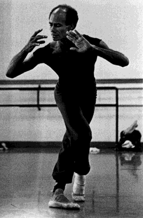

Ballet Coreoarte

Coreografía: Carlos Orta
Título: El Ultimo Canto
Compaïia: José Limón
Foto: Bruce Hoheb.
Coreoarte es una compañía venezolana de danza contemporánea creada y dirigída por Carlos Orta y Noris Ugueto.
Se expresa en la búsqueda de un lenguaje corporal latino caribeño que nos identifique, resaltando en la ejecución la esencia de estas culturas en su forma y contexto contemporáneo,desarrollando los elementos hasta lograr un lenguaje de danza muy particular en su estructura y expresión.
Para ello se hace necesario el estudio constante y sistemático a través de investigaciones como fuente alimentadora donde conjugan nuestra sensibilidad de raza híbrida con nuestras tradiciones, lo autóctono con valores provenientes de la transculturización de variadas vertientes, lo popular con lo urbano, lo tradicional con lo exótico, el pasado y el presente todo conformando a la postre un lenguaje distinto y trascendente.
En sus presentaciones Coreoarte plantea distintas faces coreográficas mostrando una absoluta independencia que captura al expectador.
La característica más evidente de la Fundación Coreoarte es su nivel del mérito artístico de cada uno de sus miembros.Esto ha sido reconocido tanto nacional como internacionalmente.
Es una compañía que mantiene un repertorio de más de 24 coreografías, los cuales han recibido excelentes críticas en los países donde se han presentado: Venezuela, Alemania, Francia, Italia, Aruba, Estados Unidos y Mexico.
Los ocho bailarines de Coreoarte son: Joseline Palma, Alfredo Pino, Poy Marquéz, Terry Springer, Carolina Avendaño, Luz Marina Dávila, Doris Palacios y Efrain Guerra. Ellos son fuertemente apasionados con un compromiso en términos indefinidos acerca de su trabajo.Cada uno de ellos trae a la compañía un mundo de individualidad, talento, entrenamiento y una fuerte formación en varias técnicas (Ballet, Moderno, Latino, etc.) lo cual los ha llevado a ser bailarines especiales y excelentes profesores.
Dentro de la "Escuela Integral de Danza Coreoarte" también se desarrolla un programa educacional muy importante, basado en una técnica vérsatil, profunda y distinta.
Es una formación integral de características muy particulares donde los alumnos tienen la libertad de investigar y desarrollar sus propias personalidades, utilizando los principios de las técnicas de danzas conocidas con elementos étnicos y culturales de Latinoamérica y el Caribe.